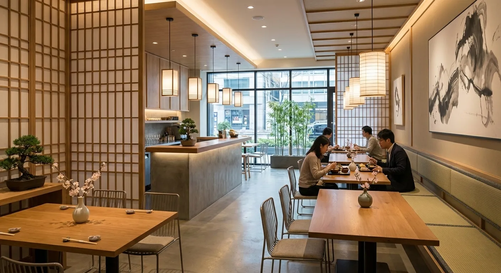
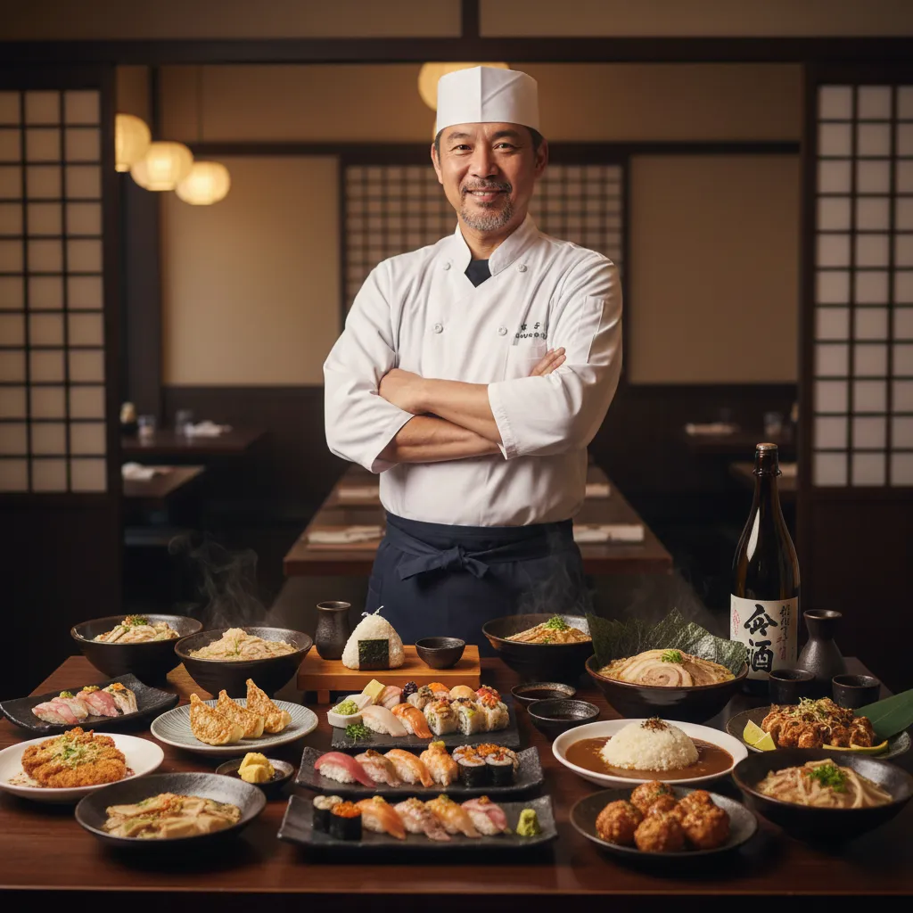
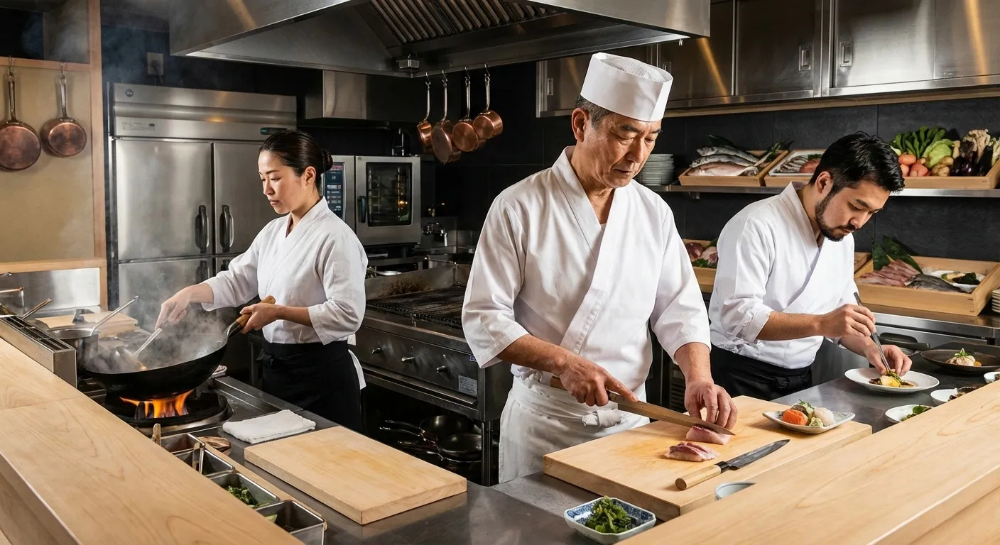

Povestea Nova Sushi a început dintr-o dorință simplă: aceea de a aduce gustul rafinat și echilibrat al
Japoniei în comunitatea noastră. Născut din admirația pentru cultura asiatică și respectul pentru
ingrediente, Nova nu este doar un restaurant, ci o invitație la călătorie. Ne-am imaginat un loc
unde tradiția milenară întâlnește spiritul modern, creând o explozie de arome menită să surprindă
atât cunoscătorii, cât și pe cei care gustă sushi pentru prima dată. Numele Nova
simbolizează un nou început, o sclipire proaspătă în peisajul gastronomic local.

Filozofia noastră: Prospețime fără compromisuri
Știm că secretul unui sushi perfect stă în detalii, iar detaliile nu pot fi mascate. De la orezul
pregătit la temperatura ideală și asezonat cu oțet de cea mai bună calitate, până la peștele
proaspăt, atent selecționat zilnic de la furnizori de încredere, nu facem niciodată rabat de la
calitate. Credem că mâncarea trebuie să fie onestă. În bucătăria noastră, fiecare rolă, fiecare
nigiri și fiecare sashimi este pregătit pe loc, cu măiestrie și răbdare, pentru a vă oferi o
experiență culinară nu doar delicioasă, ci și sănătoasă.

Mai mult decât Sushi
Deși sushi este inima meniului nostru, sufletul bucătăriei asiatice este vast și plin de surprize. La noi
veți găsi confortul unui bol de Ramen aburind, gătit lent pentru a extrage arome profunde, textura
crocantă și umplutura suculentă a Gyozei făcute în casă, sau preparate Wok vibrante. Ne-am propus să
capturăm diversitatea Asiei, oferind opțiuni echilibrate, de la preparate vegetariene creative până la
gustări picante, perfecte pentru a fi împărțite cu prietenii și familia.

Misiunea Nova
Ne dorim ca fiecare vizită la Nova Sushi sau fiecare comandă care ajunge la ușa ta să fie un moment de
bucurie și relaxare. Misiunea noastră depășește simpla servire a mâncării; ne propunem să transformăm
prânzul sau cina într-un ritual de răsfăț. Fie că sărbătorești un eveniment special sau doar cauți o
evadare delicioasă din cotidian, echipa Nova este aici să te întâmpine cu ospitalitate și pasiune pentru
gustul autentic.